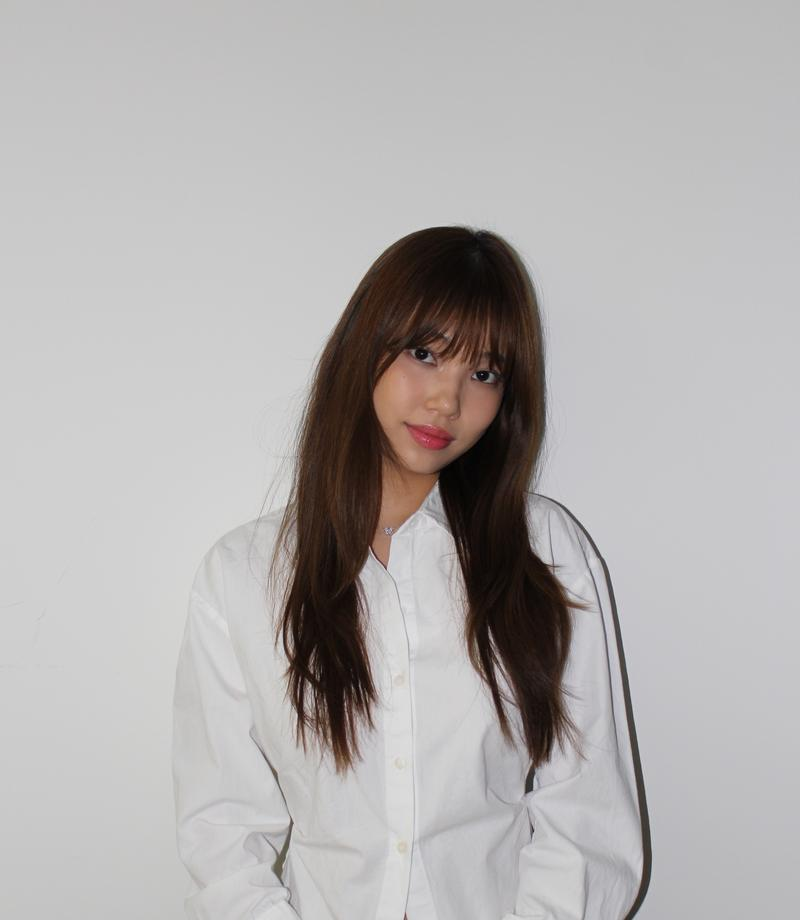

About.
UX designer with a graphic design eye.

I’m a UI/UX designer and BFA student at Tufts University, turning complex ideas into simple, user-centered experiences through research and collaboration.
Currently seeking UX design opportunities.
Design philosophy
01
Creativity
Inspired by my surroundings and willing to challenge the norm.
02
Problem Solving
Finding the real problem through research and interviews.
03
Curious & Compassionate
Empathy for people’s struggles is the essence of UX.
Experience
- UX Design InternMorphosis Architects · NOW InstituteMay – Jul 2026
- Designed two websites for the NOW Institute end to end, from research to prototype, improving usability by 27%.
- Designed publications, brochures and slide decks with clearer structure and visuals.
- Graphic & UX Design Internday–guardDec 2025 – May 2026
- Created social content, Meta ads and emails driving 300K+ impressions, traffic and sales.
- Partnered on an A/B-tested website redesign that improved UX by 25%.
- Website LeadHFES Sustainability Technical GroupAug 2025 – May 2026
- Led design of an all-in-one hub website for HFES, the world’s largest human factors association.
- Drove decisions with card sorting, interviews, personas and usability testing.
Leadership
- UX DesignerIdea Lab at Fletcher · Migrant CompassFeb – Dec 2025
- Designed a mobile platform giving migrants real-time, location-based safety insights.
- Synthesized crowdsourced data with a team of designers and engineers.
- Director of Digital MarketingTufts Product StudioFeb 2025 – May 2026
- Organized Producthon, a weekend design challenge with 40+ participants and 8 judges.
- Led marketing and outreach that boosted participation by 30%.
Certifications
- UX/UI & PrototypingThe Global Career AcceleratorJul 2026
- Data VisualizationThe Global Career AcceleratorAug 2026
- AI Professional SkillsThe Global Career AcceleratorAug 2026
- Intercultural SkillsThe Global Career AcceleratorAug 2026
- Inbound MarketingHubSpotOct 2025
- Getting Started with Semrush for In-House MarketersSemrushJun 2026
- On-Page SEO and AI Search EssentialsSemrushJun 2026
Skills
Tools
- Figma
- Figma Make
- Adobe Illustrator
- Adobe Photoshop
- Adobe InDesign
- Claude Code
- GitHub
- Vercel
UX
- User Research
- User Interviews
- Usability Testing
- Card Sorting
- Personas
- User Flows
- Information Architecture
- Wireframing
- Prototyping
- A/B Testing
- Design Systems
- Accessibility
Soft skills
- Cross-functional Collaboration
- Stakeholder Communication
- Leadership
- Empathy
- Problem Solving
- Adaptability
- Intercultural Communication
- Presenting
Education
BFA, Tufts UniversityClass of 2027 · Minor in Entrepreneurship